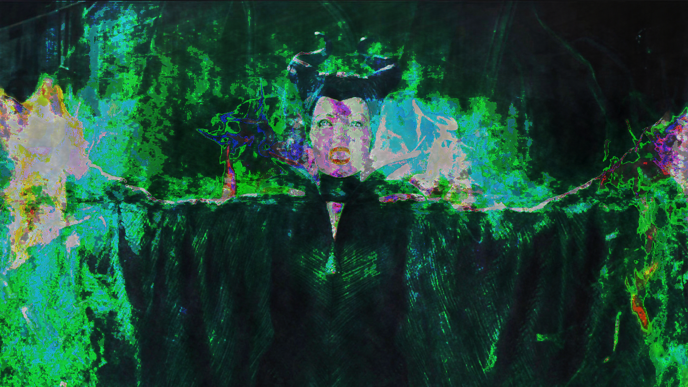

Glitch Art
In this project, I experimented with Glitch Art for the first time using Audacity and Text Edit. The topic I chose for my images is famous movie villains.



In this project, I experimented with Glitch Art for the first time using Audacity and Text Edit. The topic I chose for my images is famous movie villains.